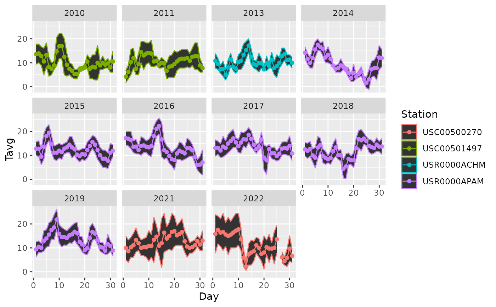

getWeatherAtLocation.RdGiven a known geographical location, this function downloads the corresponding raw text file of observations for the closest station from "ftp://ftp.ncdc.noaa.gov/pub/data/ghcn/daily/gsn/", and converts the relevant average, maximum, minimum daily temperature into a dataframe. This function also reports the distance between the given geographical location and the corresponding meteostation.
getWeatherAtLocation(
longitude,
latitude,
start,
end,
threshold = 200,
dir = tempdir(check = TRUE),
keep.raw = FALSE
)first year of observation. The function will keep widening its search radius until it finds a station with data reaching back to the startyear. Also, the returned data will only reach back to the start year.
last year of observations.
distance within which to limit search for weather stations (default 200 km)
directory to store the raw observations
whether or not to keep the raw file
longitude and latitude of the known geographical location
require(TuktuTools)
a <- getWeatherAtLocation(-152.5, 68.25,
start = 2010, end = 2022)
#> [1] "1 USC00500270"
#> The 1th closest station is USC00500270
#> The distance is 31.655 km.
#> Data to be covered from 2020 to 2022.
#> Warning: cannot remove file '/tmp/RtmpxC2W7K\raw_AO000066160.txt', reason 'No such file or directory'
#> Warning: cannot remove file '/tmp/RtmpxC2W7K\raw_USC00500270.txt', reason 'No such file or directory'
#> [1] "2 USR0000APAM"
#> The 2th closest station is USR0000APAM
#> The distance is 54.658 km.
#> Data to be covered from 2012 to 2022.
#> Warning: cannot remove file '/tmp/RtmpxC2W7K\raw_AO000066160.txt', reason 'No such file or directory'
#> Warning: cannot remove file '/tmp/RtmpxC2W7K\raw_USC00500270.txt', reason 'No such file or directory'
#> Warning: cannot remove file '/tmp/RtmpxC2W7K\raw_USR0000APAM.txt', reason 'No such file or directory'
#> [1] "3 USC00504683"
#> [1] "4 USC00509859"
#> [1] "5 USC00509858"
#> [1] "6 USR0000ACHM"
#> The 6th closest station is USR0000ACHM
#> The distance is 100.017 km.
#> Data to be covered from 2012 to 2022.
#> Warning: cannot remove file '/tmp/RtmpxC2W7K\raw_AO000066160.txt', reason 'No such file or directory'
#> Warning: cannot remove file '/tmp/RtmpxC2W7K\raw_USC00500270.txt', reason 'No such file or directory'
#> Warning: cannot remove file '/tmp/RtmpxC2W7K\raw_USC00504683.txt', reason 'No such file or directory'
#> Warning: cannot remove file '/tmp/RtmpxC2W7K\raw_USC00509858.txt', reason 'No such file or directory'
#> Warning: cannot remove file '/tmp/RtmpxC2W7K\raw_USC00509859.txt', reason 'No such file or directory'
#> Warning: cannot remove file '/tmp/RtmpxC2W7K\raw_USR0000ACHM.txt', reason 'No such file or directory'
#> Warning: cannot remove file '/tmp/RtmpxC2W7K\raw_USR0000APAM.txt', reason 'No such file or directory'
#> [1] "7 USR0000ARMC"
#> [1] "8 USR0000AKLP"
#> [1] "9 USC00501497"
#> The 9th closest station is USC00501497
#> The distance is 122.884 km.
#> Data to be covered from 2010 to 2022.
#> Warning: cannot remove file '/tmp/RtmpxC2W7K\raw_AO000066160.txt', reason 'No such file or directory'
#> Warning: cannot remove file '/tmp/RtmpxC2W7K\raw_USC00500270.txt', reason 'No such file or directory'
#> Warning: cannot remove file '/tmp/RtmpxC2W7K\raw_USC00501497.txt', reason 'No such file or directory'
#> Warning: cannot remove file '/tmp/RtmpxC2W7K\raw_USC00504683.txt', reason 'No such file or directory'
#> Warning: cannot remove file '/tmp/RtmpxC2W7K\raw_USC00509858.txt', reason 'No such file or directory'
#> Warning: cannot remove file '/tmp/RtmpxC2W7K\raw_USC00509859.txt', reason 'No such file or directory'
#> Warning: cannot remove file '/tmp/RtmpxC2W7K\raw_USR0000ACHM.txt', reason 'No such file or directory'
#> Warning: cannot remove file '/tmp/RtmpxC2W7K\raw_USR0000AKLP.txt', reason 'No such file or directory'
#> Warning: cannot remove file '/tmp/RtmpxC2W7K\raw_USR0000APAM.txt', reason 'No such file or directory'
#> Warning: cannot remove file '/tmp/RtmpxC2W7K\raw_USR0000ARMC.txt', reason 'No such file or directory'
#> [1] "10 USW00026537"
#> [1] "11 USW00026508"
#> [1] "12 USR0000AUMI"
#> [1] "13 USS0049T03S"
#> [1] "14 USC00503210"
#> [1] "15 USC00506144"
#> [1] "16 USC00502425"
#> [1] "17 USW00096409"
#> [1] "18 USW00026564"
#> [1] "19 USC00509869"
#> [1] "20 USS0049T01S"
#> [1] "21 USC00502103"
#> [1] "22 USC00502104"
#> [1] "23 USS0050S01S"
#> [1] "24 USS0051R01S"
#> [1] "25 USW00026517"
#> [1] "26 USW00026533"
#> [1] "27 USC00508130"
#> [1] "28 USR0000ANOR"
#> [1] "29 USC00507778"
#> [1] "30 USC00503558"
#> [1] "31 USR0000AHOW"
#> [1] "32 USS0050R04S"
#> [1] "33 USC00501492"
#> [1] "34 USC00505354"
#> [1] "35 USC00500230"
#> [1] "36 USR0000AINI"
# look at stations
data("gsn_stations")
gsn_stations %>% head
#> station lat lon alt name GSN
#> 1 ACW00011604 17.1167 -61.7833 10.1 ST JOHNS COOLIDGE FLD
#> 2 ACW00011647 17.1333 -61.7833 19.2 ST JOHNS
#> 3 AE000041196 25.3330 55.5170 34.0 SHARJAH INTER. AIRP GSN
#> 4 AEM00041194 25.2550 55.3640 10.4 DUBAI INTL
#> 5 AEM00041217 24.4330 54.6510 26.8 ABU DHABI INTL
#> 6 AEM00041218 24.2620 55.6090 264.9 AL AIN INTL
#> StationID
#> 1
#> 2
#> 3 41196
#> 4 41194
#> 5 41217
#> 6 41218
gsn_stations %>% subset(station %in% a$Station)
#> station lat lon alt name
#> 107884 USC00500270 68.1667 -151.7667 640.1 AK ANAKTUVUK AUTO
#> 107953 USC00501497 68.0781 -149.5647 990.6 AK CHANDALAR SHELF DOT
#> 109100 USR0000ACHM 67.7558 -150.4933 944.9 AK CHIMNEY LAKE ALASKA
#> 109218 USR0000APAM 67.7719 -152.1950 823.0 AK PAMICHTUK LAKE ALASKA
#> GSN StationID
#> 107884
#> 107953
#> 109100
#> 109218
# plot avg temperature by year
require(ggplot2)
a %>% subset(Month == 7,) %>% arrange(Day) %>%
ggplot(aes(Day, Tavg, col = Station)) +
geom_ribbon(aes(ymin = Tmin, ymax = Tmax)) +
geom_point() + geom_path() + facet_wrap(.~Year)
#> Warning: Removed 1 rows containing missing values (`geom_point()`).

# map stations in Alaska region where lon < -130 & lat > 60
require(sf)
gsn.sf <- st_as_sf(gsn_stations %>% subset(lon < -130 & lat > 60),
coords = c("lon", "lat")) %>% st_set_crs(4326)
mapview::mapview(gsn.sf[,"station"])